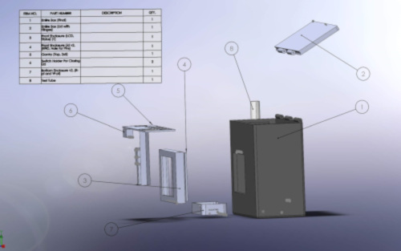
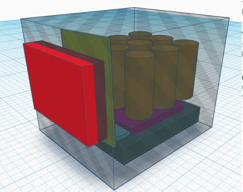
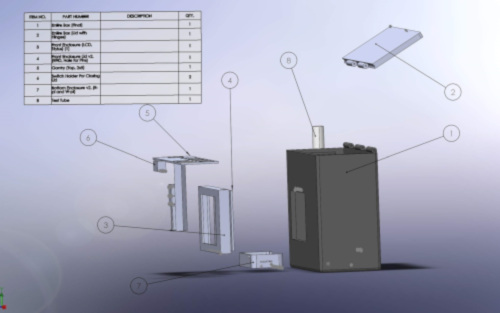
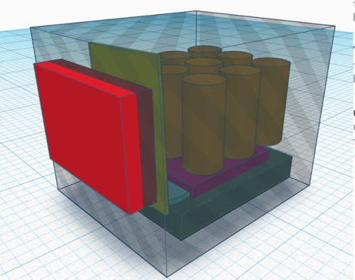
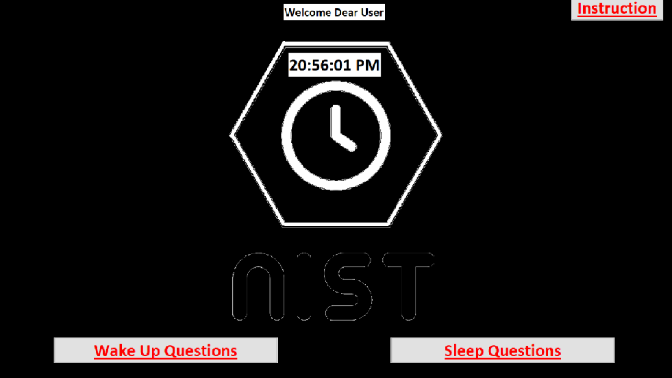
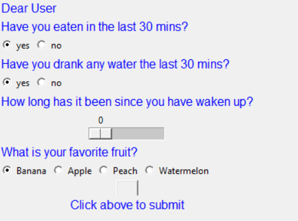
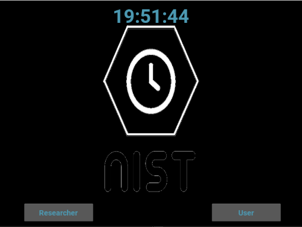
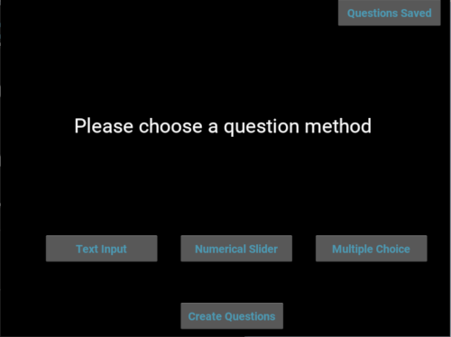
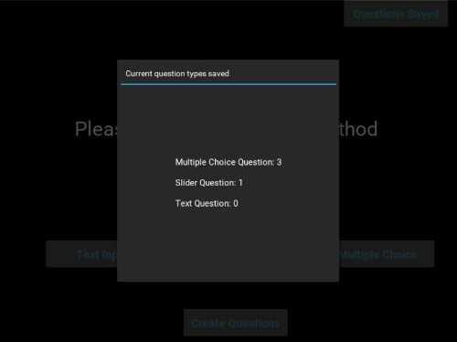
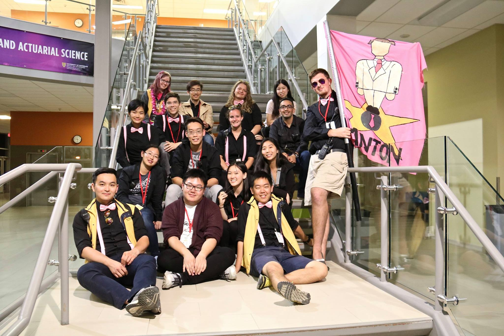

Summary of Experiences
Innovation For Health Hackathon
2019 October - 2019 November
Link to code
The Innovation for Health Hackathon was a month long hack competition located in Calgary Alberta.
I worked with a team 4 other talented individuals from various backgrounds and disciplines. Our Goal
was to tackle some of the pressing issues in the field of medicine and health.
Our team was tasked with improving the accuracy of the data collected by self-sampling from the test subjects. Especially data collected by children subjects.
The context of our task is collection of saliva by the test subject at different time periods and correlates them to the level of stress felt by the test subjects.
As a member of the software team, my tasks were:
1. Provide precise timing of when the sample was collected.
This was done by implementing a clock and alarm function with Python widgets for the software. An RFID scanner and RFID tag was used to detect when the test subject
have physically conducted the test. Each tube have an RFID tag and once the tube is inserted into the testing area, the device will give a time stamp which is stored
along side the user's data entry of that particular test. The alarm will then count down to the next time the user will have to test.
2. Create an user interface that allows the test subject to answer questions from the researchers.
The user interface was implemented using Python and GUI widgets. It allows the user to answer questions given by the researchers and saved their response directly into
an excel sheet format.
3. Provide the researcher an user interface for them to easily create questions and extract data from the device.
The researcher would only need to save a text file with a given format to create various kind of questions. The code would then translate it all into the user interface
for the test subjects to see. This way the researchers would not need any coding experience to be able to update their questions.
Below are our 3D rendered designs during our planning phase. The coding section can be found in the link attached. The 3D rendered model was NOT done
by me. Credits to Maggie Thai and Amarjit Singh.
 



Below are the prototype interface.


2019 October - Current
Link to code
After the Innovation for Health event, we continued our development of the device for the Department of Paediatrics at the University of Calgary,
under the supervision of professor Gerald Giesbrecht. As a continuing member of the software team, It was my focus to upgrade our prototype user
and researcher interface.
The changes I made are:
1. Used Kivy Lang on Python to improve the user interface:
By using Kivy, I was able to improve the asthetic of the interface by keeping everything in seperate windows with simple buttons to transition
between the windows.
2. Used Kivy Lang to improve the researcher interface:
Researchers can now create the questions on the same interface as the user, eliminating the need of a seperate text file. Researcher can access the questions creation
window through a log in screen with their credentials. The questions creations screen allows the researchers to determine the number of questions,
the type of questions and response they wish to recieve from the test subjects. The corresponding questions will then be created in the test subject's side
of the interface.
3. Used MYSQL database for data storage:
Instead of storing user input into an excel file, I connected a local MYSQL database to the interface. It stores the researcher login credentials and user
answers, time stamp and test subject information.



University of Waterloo Math Orientation
2018 sept - 2019 sept
The Math Orientation is a week of activities designed for the incoming first year math students at the University of Waterloo. The activties consists
an array of different games and shows that allows the first year students to familiarize with the university and with each other. I helped the orientation
of 2018 and 2019.
2018 Math Orientation: Devisor
I was a Devisor during the 2018 orientation. My team and I designed the Friday night event for the first year students. I personally designed games
such as Quiz Bowl and Capture the Calculus(Capture the flag but with calculus worksheet replacing flags). It was our responsibility to supervise and
organize first years in these activities to ensure everything runs smoothly.
2019 Math Orienation: Head Pink Tie
During my time as Devisor, I was not able to directly interact with the first year student. Thus, I chose to become a Head Pink Tie instead.
A Pink Tie is an upper year student that will personally guide the first year students through the orientation week. They will participate in all
events planned by the Devisor with the new students. My job as Head Pink Tie was to lead my group through the scheduled events during the orientation,
and answer any concerns or curiosity the first year students had. I also serve as the first responder to any emergency situations that might occur in my
orientation group.
